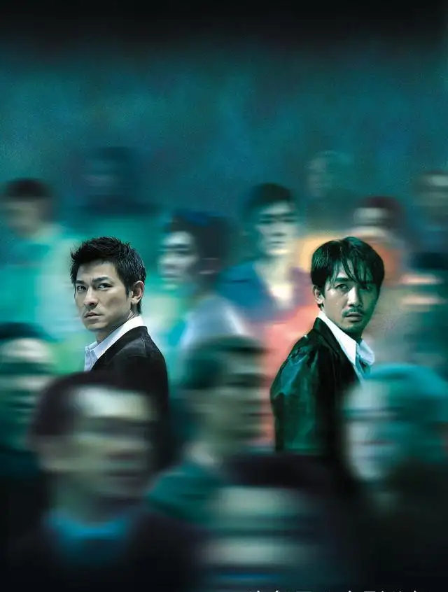

无间道

概况
导演: 刘伟强、麦兆辉
编剧: 麦兆辉、庄文强
主演: 刘德华 / 梁朝伟 / 黄秋生 / 曾志伟 / 更多...
类型: 悬疑 / 犯罪
制片国家/地区: 中国
语言: 中文
上映日期: 2002-12-12
片长: 101分钟
剧情简介
2002年的一个晚上，根据陈永仁卧底情报，获知一批毒品即将交易，而交易的一方为韩琛，
但由于当时刘建明及时将消息传给了韩琛使其成功逃脱，不过因此双方发现各自的内部俱有“内鬼”，
于是一场激烈的角斗由此展开。在最后的结局中，双方“内鬼”都认出了自己的身份，
不过刘建明抢先一步，已经将陈永仁在警察局的档案删除，但在删除之前，
保留了一个备份，密码是女朋友Mary的生日。经过深思，刘建明决定做一个好人，请求陈永仁给他一次机会，
陈永仁没有信，拷上了刘建明。最后陈永仁死在了韩琛的另一个警方卧底枪下，
刘建明也杀死了那个开枪的卧底 。
回到上一页